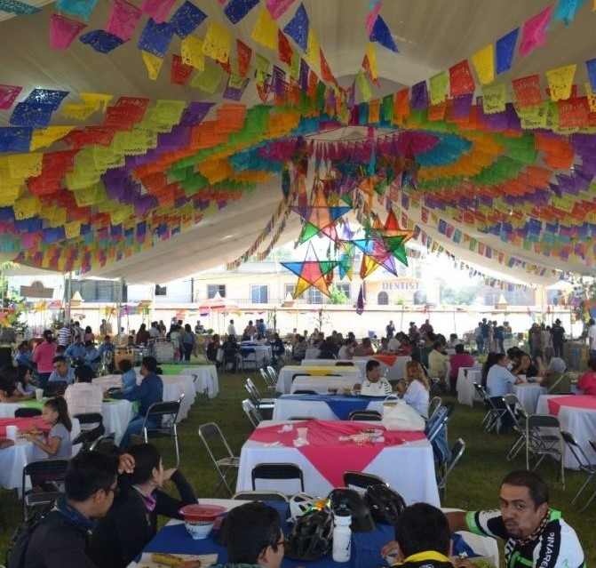

COSTUMBRES
Las costumbres de Santa Ana Zegache son muy lindas y significativas, dentro de ellas se encuentran las
celebraciones como el día de los muertos, donde, la personas de la comunidad acostumbra a ir al panteón
a visitar a sus seres queridos que fallecieron, dejandoles fruta y bebidas en las sus tumbas.
Estas
costumbres viven desde hace varios años atrás y han viajado de generación en generación y actualmente
aún se siguen conservando.